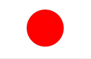

국기
- 종교 | 神道(Shintoism), 불교, 기독교
- 화폐 | 일본 엔(JPY, ￥)
- 언어 | 일본어
- 정치 | 입헌군제, 자유민주주의, 의원내각제, 다당제, 일당 우위 정당제, 양원제
- 인구수 | 3779만
역사
일본은 한국과 중국으로의 정치 · 경제적 침투를 통해 점차 제국주의를 형성해 나갔다.
1910년 8월 22일 일본은 대한제국 정부를 위협하여 국권을 강탈하고,
한반도의 완전한 지배를 위해 대한제국을 감시하기 위해 설치했던
통감부를 일본 천황이 직접 임명한 총독이 관리하는 조선총독부로 바꾸었다.
제1차 세계 대전(~1918년)이 발발하자 일본은 영일 동맹을 이유로 연합국측에 가담하여 참전했고
제1차 세계 대전 동안 일본 자본주의는 크게 발전하여 미국·영국에 이은 강국으로 상승했다.
제2차 세계 대전이 발발하고 저항하던 일본은
히로시마와 나가사키에 원자 폭탄이 투하되자 8월 15일 포츠담 선언을 수락하고 쇼와 천황이 직접 '항복 선언'을 발표하여 전쟁은 종결되었다.
#도쿄
- 특징 |
- 기후 |
- 지형 |
일본의 정치, 경제, 문화, 교육, 금융, 산업, 교통, 패션의 중심지이며,
뉴욕, 런던과 함께 세계 3대 도시 중 하나에 속한다.
온난 습윤 기후에 속하며 일본 국내에서는 '태평양측 기후'로 구분한다.
여름은 한국보다 습하고 불쾌지수가 높아 에어컨 없이는 생활이 불가능할 정도다.
반면 겨울은 한국보다 한 달 정도 짧으며 평균 기온이 높은 편이다.
도서 지역인 이즈 제도와 오가사와라 제도는 화산섬이며 현재에도 화산 활동이 진행 중이다.
타치카와시 아래로 타치카와 단층이 있어 지진 가능성이 있다.
- 스포츠 |
- 교통 |
- 관광 |
아시아 최초로 하계 올림픽을 두 번 개최한 도시이다.
1964 하계 도쿄 올림픽과 2020 동계 도쿄 올림픽을 개최하였다.
지하철 노선은 280개 이상의 역으로 도쿄 도내 전역을 망라한다.
도쿄 올릭핌을 계기로 자동차 전용 고속도로 및 환상·방사상의 일반 간선도로가 건설되었다
4~5월과 10~11월은 각종 축제나 행사가 많아 도쿄를 여행하기 좋다.
3월 말부터 피기 시작하는 벚꽃은 4월에서 5월 초 사이에 가장 아름다우니 참고한다.
#훗카이도
- 역사 |
- 기후 |
- 산업 |
본래 아이누족이 살고 있던 미개지로 에조치라고 불렀으며, 메이지유신 이후에 본격적인 개발이 시작되었다.
냉대, 습윤 기후와 같이 매우 한랭한 기후가 나타난다.
여름과 겨울의 온도차가 크고 겨울에 눈이 내리면 굳어져서 잘 녹지 않는다.
도내 전역이 폭설 지대이고 일부 지역은 특별 폭설 지대로 지정되어 있다.
농업은 밭작물 위주의 대규모 경영이 특색이다.
- 관광 |
- 지리 |
Mt.Moviwa
모에레누마공원
하코다테산
오타루 아쿠아리움
나카지마 공원
홋카이도 역사마을
홋카이도 본섬은 면적이 77,983.9 km²으로
일본 열도에선 혼슈 다음으로 2번째, 세계에선 21번째로 큰 섬이다.
넓은 면적을 차지하는 평평한 산지는 표고 300m 이하의 평지, 그리고 현저히 발달한 해안단구는 홋카이도 지형의 큰 특색이다.
찜행지 추가

일본 여행 기록 구경하기

2022.4.12
2022.4.12
2022.4.12
2022.4.12
2022.4.12
2022.4.12
2022.4.12
2022.4.12
일본 여행 팁
유리심장

가이드 설명을 들으면서 여행하면 더욱 재미있는 여행이 될 수 있어요. 특히 박물관은 가이드 필수!
가영이 여행가영
로마 여행갈 때는 꼭 편한 운동화 준비하세요!
가영이 여행가영
피사의 사탑 근처에는 사람이 많은데, 소매치기도 많은 지역이니 조심 또 조심하세요~!
소리가 들리는 곳으로
베니스는 딱 하루면 적당한 것 같고, 작은 섬들이기 때문에 빡시게 돌아 다니지 마시고,
젤라또 먹고 커피 마시고 하면서~ 천천히 여행하시는거 추천드려요!
유리심장
가이드 설명을 들으면서 여행하면 더욱 재미있는 여행이 될 수 있어요. 특히 박물관은 가이드 필수!